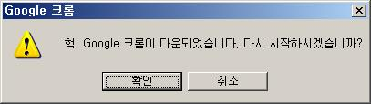
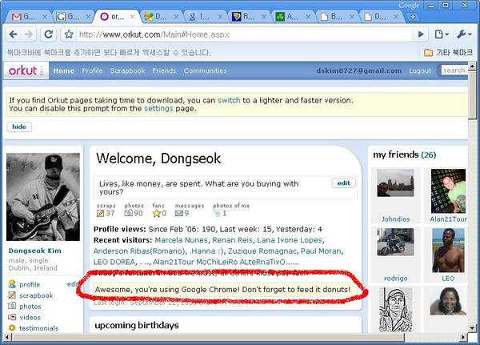
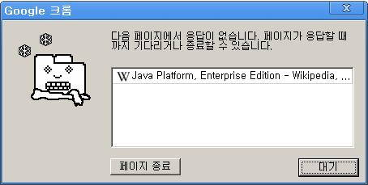
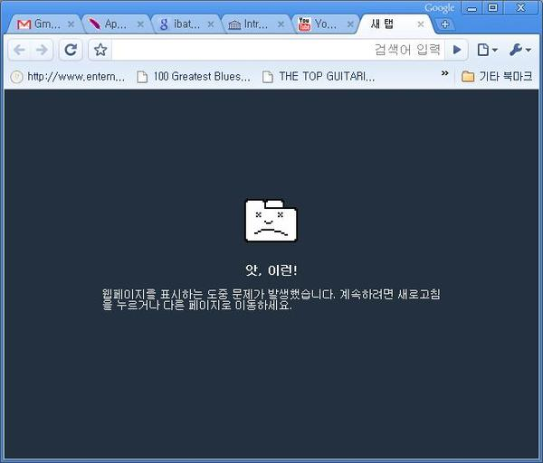

POSTS
헉! google 크롬이 다운되었습니다.
구글에서 만든 브라우져
로딩속도가 상당히 빨라서 인터넷 환경이 나쁜 곳에서 특히 유용하다.
그런데 보안에 버그가 있다고 한다(위험한 파일을 무작정 다운로드 한다고 하는데 직접 겪어보지는 못했다)
다운되었을 때는 요런 메시지가 뜬다. 역시 구글다운 메시지

구글 크롬으로 orkut 을 쓰면 저런 메세지가 뜬다.

탭중의 하나가 응답이 없을 때 이런 메세지가 뜬다.
(근데 저 정겨운 그림은 누가 그렸는지…)
(근데 저 정겨운 그림은 누가 그렸는지…)

